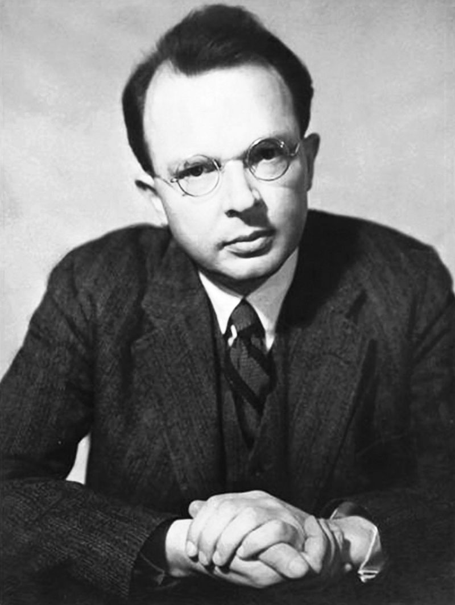

Verifiability, Probability, Thick Ethical Concepts
“The connection between meaning and confirmation has sometimes been formulated by the thesis that a sentence is meaningful if and only if it is verifiable, and that its meaning is the method of its verification. The historical merit of this thesis was that it called attention to the close connection between the meaning of a sentence and the way it is confirmed.”

Excludes some scientific statements:
Even mundane statements potentially problematic:
OVC: A declarative sentence is meaningful iff it is confirmable or disconfirmable.
Issue: OVC is itself not confirmable or disconfirmable
Carnap in The Unity of Science:
“All statements belonging to Metaphysics, regulative Ethics, and (metaphysical) Epistemology have this defect, are in fact unverifiable and, therefore, unscientific. In the Viennese Circle, we are accustomed to describe such statements as nonsense (after Wittgenstein).”
The verifiability criterion implies a dichotomy of values and facts: ethics is not a matter of facts, and matters of fact have nothing to do with ethics
Factual statements presuppose values: - Coherence, comprehensiveness, simplicity, instrumental efficacy - Part of our idea of cognitive flourishing and eudaimonia
Implication: Some values must be objective (unless science is merely subjective)
“…Are statements of string theory meaningful with respect to the language of relativity theory/quantum mechanics and the set of probability measures available to present-day physicists? Are prescriptive (normative or evaluative) sentences meaningful with respect to a set of descriptive sentences and the set of probability measures available to competent ordinary speakers or professional moral philosophers? (Assuming that probabilities have been assigned to prescriptive sentences, too). At least in principle, any such question can be addressed using appropriate instances of \(NVC(\mathcal{L}, \mathcal{S}_O, \mathcal{S}_N, \mathcal{P})\), and there are many more potential applications that may not have concerned the logical empiricists but which may well be relevant today.”
Where
Sentence: (T) “At the Miami Open 2022 Alcaraz won 35 out of 50 drop shots”
Sentence: (A) “The Absolute enters into, but is itself incapable of, evolution and progress”
We need a concept of probability which can serve as a guide in life (to preserve the pragmatist appeal of Leitgeb’s semantics)—i.e. can be called probability\(_1\) in Carnap’s diction—and can make sense of assigning probability in a purely formal way, independent of the meaning of the elements of \(\mathcal{L}\)
Assigns probabilities without asking what the statements to which probabilities are assigned mean, or whether they even have (verificationistic) meaning.
“als Nothwendigkeit, die in einem ästhetischen Urtheile gedacht wird, nur exemplarisch genannt werden, d. i. eine Nothwendigkeit der Beistimmung aller zu einem Urtheil, was als Beispiel einer allgemeinen Regel, die man nicht angeben kann, angesehen wird. Da ein ästhetisches Urtheil kein objectives und Erkenntnißurtheil ist, so kann diese Nothwendigkeit nicht aus bestimmten Begriffen abgeleitet werden und ist also nicht apodiktisch. Viel weniger kann sie aus der Allgemeinheit der Erfahrung (von einer durchgängigen Einhelligkeit der Urtheile über die Schönheit eines gewissen Gegenstandes) geschlossen werden. Denn nicht allein daß die Erfahrung hierzu schwerlich hinreichend viele Beläge schaffen würde, so läßt sich auf empirische Urtheile kein Begriff der Nothwendigkeit dieser Urtheile gründen”